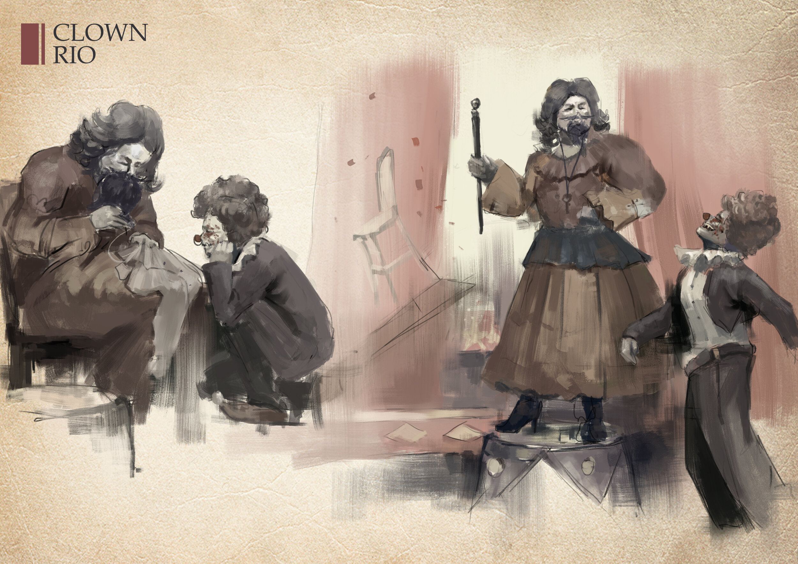
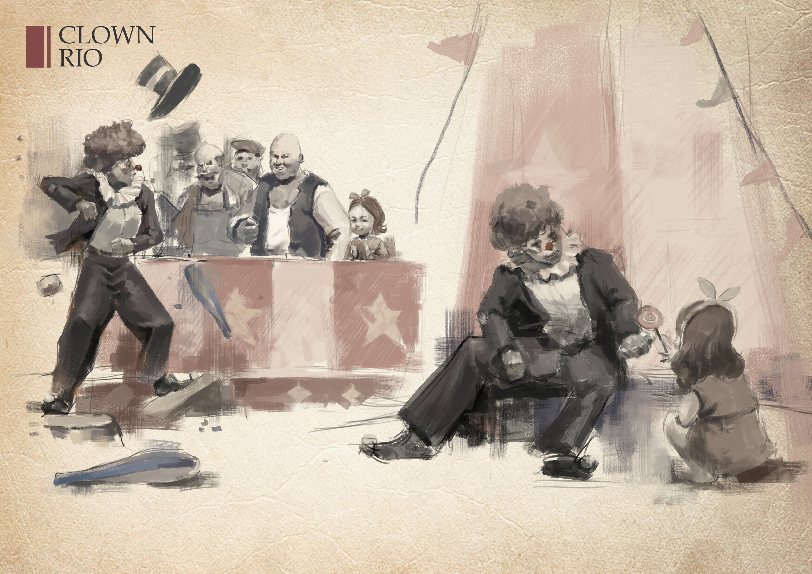
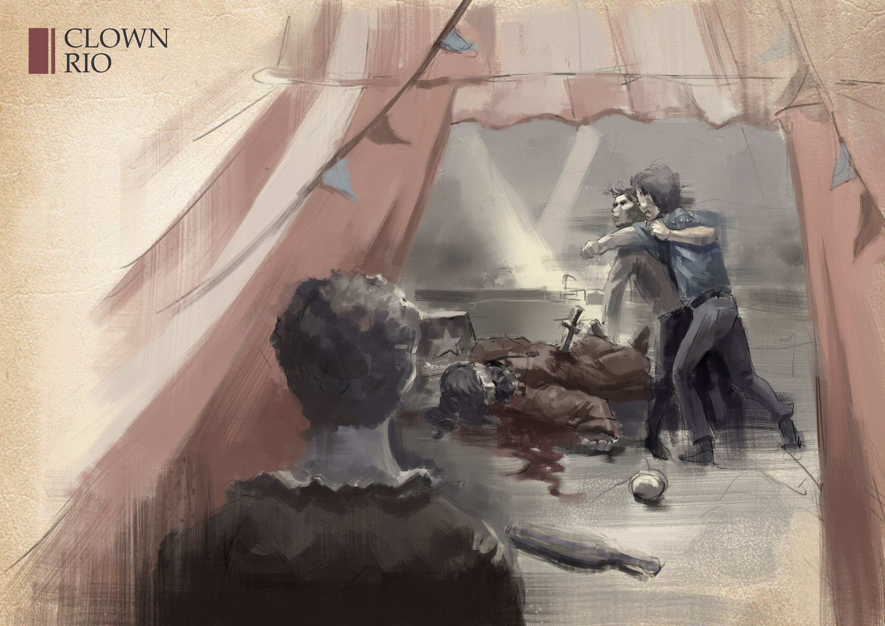
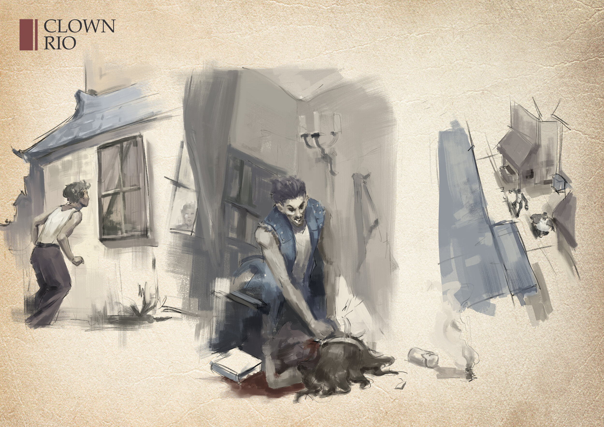
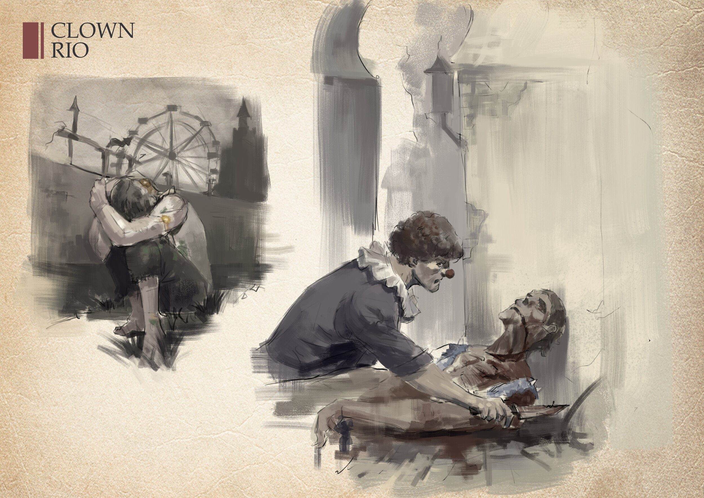
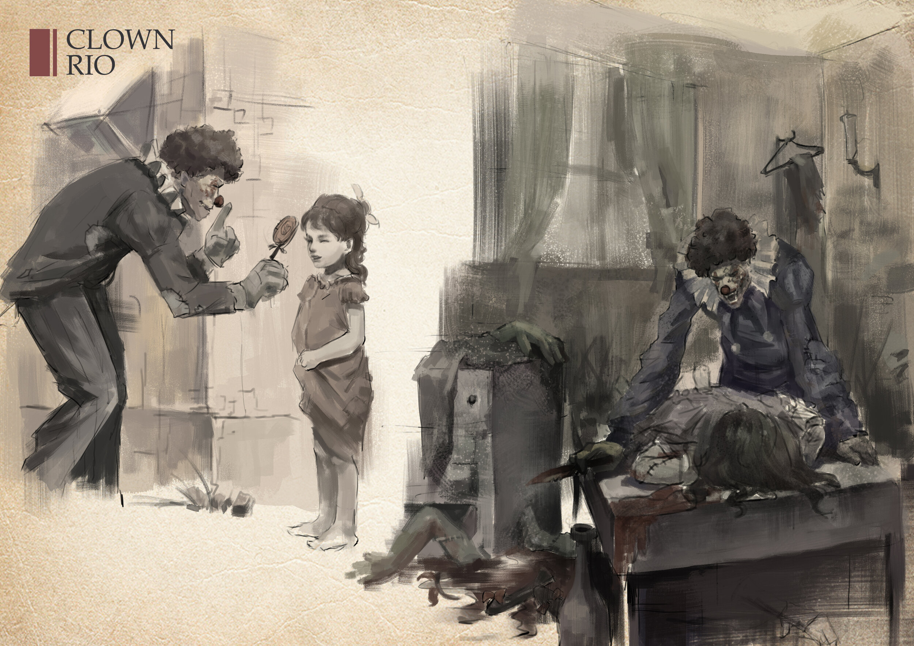
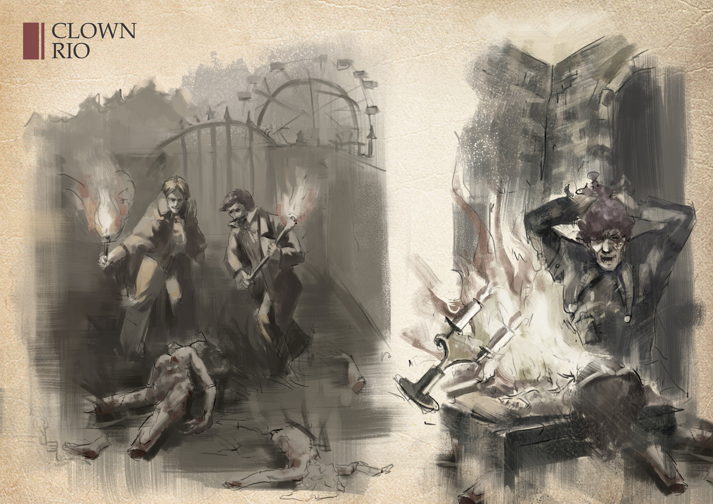

Original Short Story by Jinming
1.
Rio was born into a family of clowns.
His grandfather led his own group that performed for the royal family and the Papacy.
However, due to his ugly, fanged and unusual face at birth, Rio was considered a ghost by his clan and was abandoned on the farm from a young age.

The ugly child was in turn abandoned by his family, and rumours followed Rio as he grew up.
Half grew, Rio finds himself wrapped in gossip, disgust, dislike and fear, and realising that the farmhouse no longer has room for him, the kind-hearted Rio leaves quietly one spring day.

Despite his ugly looks, the kind-hearted Rio met his saviour at the age of 13. The head lady of the circus looked like a man, despite having grown up with thick hair and a thick beard.
Probably because the encounters at an early age were so similar, the matron began to teach Rio to the clown and Rio worked very hard.
Rio's ugly face was a huge hindrance to his performances and almost every time he performed, Rio was subjected to all sorts of bad reviews from the audience.
However, there is always someone who loves him. After one performance, Rio has a little fan, a sweet little girl who discovers the love for the world that Rio hides in his performances.

At the age of 17, Leo decided to perform one last time, one last try.
If people still didn't like him, he would give up being a clown and work as a circus animal keeper instead.
Something unexpected happened, Leo's performance was disliked by the audience and a bad-tempered punk beat Leo up in the middle of the show. But the circus master is stabbed to death by the punk in the process of stopping him.

Leo is once again an orphan.
After being banished by members of the circus, Leo decides to take his revenge.
2..
A month later, a gruesome clown killing takes place in the town from which the circus was banished. A young girl named Alice is brutally poisoned and dismembered in her home, and according to her brother's description, the killer is Leo the Clown.
At this point, Leo wakes up in a run-down playground.
3.
Time rewinds to the five hours before the little girl died.
That night, the house was empty. Leo tumbled into the house and put poison in the cup. Then he waited behind the curtains for the punk, but things got out of hand.
His whole body went into a frenzy until he passed out.
When he woke up again three days and two nights later, he found himself lying in an amusement park, unable to remember anything that had happened before.
But the more he thought about it, the more he got a headache, and just as he was about to faint from the pain, the
The memories suddenly came flooding back to him like a tidal wave.
That night, he wanted the punk to die from the poison, so he sneaked into the punk's house and put the poison in his glass of water.
By some strange chance, the little girl, Alice, spilt the poisoned water.
The poisoned water eroded a sunken hole in the ground, and white smoke came out.
The punk thought Alice was trying to poison herself, and in a fit of rage, he decided he didn't care if he had already taken one life anyway, so he slit the girl's throat with a broken cup and poured the remaining poisoned water in the broken cup down the girl's throat.
Afterwards, he blamed Rio for the girl's death and chased and beat him with the whole village.

Rio knows the truth about the girl's death, but he believes that it was his own fault that led to the final tragedy
The last light in his heart was extinguished
4.
Will the angels turn them to good and bring them to the light?
No, no, never, they have sunk into hell, it is the devil who will punish the wicked, who cannot save them away, who can replace the devil as a believer on earth?!
Frustration rushed over him, and when he saw himself in the broken mirror, he suddenly understood why God had moulded him into this. No, it was not God, it was Satan, the great Lord of Hell who had sent him into this world and sent him to punish this group of human beings whose souls had long been filthy and rotten and crawling with molehills.
I, Rio, no, I, I am a faithful follower of the great Satan!
I am the devil incarnate, you, wait, the devil has begun to judge!

5.
Rio began to kill for real, and the name of the demon clown began to spread from Alice's village and town.
The first to die was the punk.
Then more punks died, and then the village was cursed with a serious contagious disease, and soon almost everyone in the village was dead.
Those who survived were terrified of the night.
The night was the time for the demon clown to hunt, appearing at the doorstep or on the path, with a magic box in one hand and a bowler hat in the other, but in the next moment the clown's prey would be unconscious and they would wake up again to find themselves trapped, like lambs to the slaughter, waiting for the clown's knife to fall.
Slowly, little by little, the Joker likes to dismember his prey, watching it crumble in fear and face death in hopelessness.

6.
Later on the maniacal to the extreme Rio starts abducting children.
For the inner Rio told him that Alice was still alive, that she was not dead, but just waiting for Rio to find her.
So he started abducting children, and any little girl that even remotely resembled Alice was knocked unconscious with a lollipop tainted with the anaesthetic.
After he carried them to the amusement park, he dismembered particularly similar body parts.
He would create a little girl and bring her back to life!

7.
1 year later, Rio has finished making Alice.
The outside world's search for Rio looms ever closer, and they seek out the rundown amusement park in the hope that they can capture Rio and find the missing children.
However, when they enter the amusement park, they are horrified to find dismembered bodies scattered all over the park, and the parents who have come with the police all break down and cry.
8.
Rio, who was inside the amusement park at this time, also became even more frantic.
The Alice he had crafted began to decompose, unable to speak or laugh, and even crawling with tiny insects that no amount of repelling would get rid of.
Desperate, he smashed all the objects in the house and overturned them on the floor. The candle flame was likewise knocked to the ground, igniting the fire in the process.
Rio watched the girl who had been made to cling to her head as the flames slowly engulfed the house.
Out of nowhere, Rio saw Alice in the flames and saw the head lady Jean.
Rio walked towards them.
The flames gobbled at Rio, and as if he could not feel the pain, Rio walked deeper into the flames with a smile on his face.